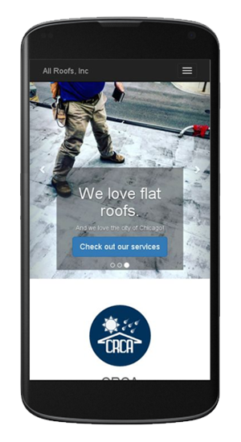
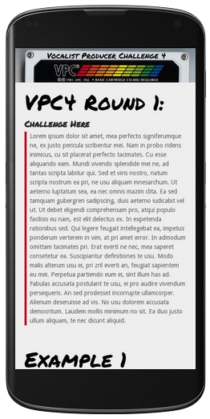
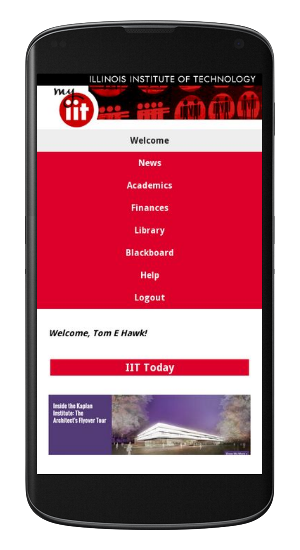
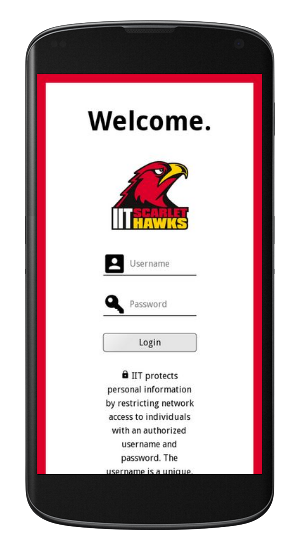

This is my new most recent demo. I built a replacement website for for All Roofs, Inc. This is my first website to utilize Bootstrap, my other designs are all primarily from scratch.
The older website was not responsive or mobile friendly, so I ported their information and updated it with some modern flair and removed outdated information. Of note, the form's fields pulls up a contextual numpad keyboard under the phone field, and the telephone number and email links are compatible with your mobile phone's native applications of choice.

This is my second most recent demo, and is for the Vocalist Producer Challenge 4, an annual event in the Nerdcore and Chiptune music communities. In the VPC, pairs of vocalists and producers team up and complete challenges for cash prizes and exposure. This site was built by me out of love for the community, voluntarily.
The VPC started June 11th, 2016, and round one has already finished. In previous years, the VPC used Wordpress, which I avoided for this particular design.

My final project for ITMD362 was a group project, where we chose to redesign the school student portal. Not all of the links are active, the site is mostly supposed to be aesthetically functioning, and does not actually use real data for the most part.

I felt I should also show off the login page for the above project, as this was my first area of concentration in group participation for this particular project. I hope to later condense this section into the above section and have multiple screenshots within an image slideshow or something similar.